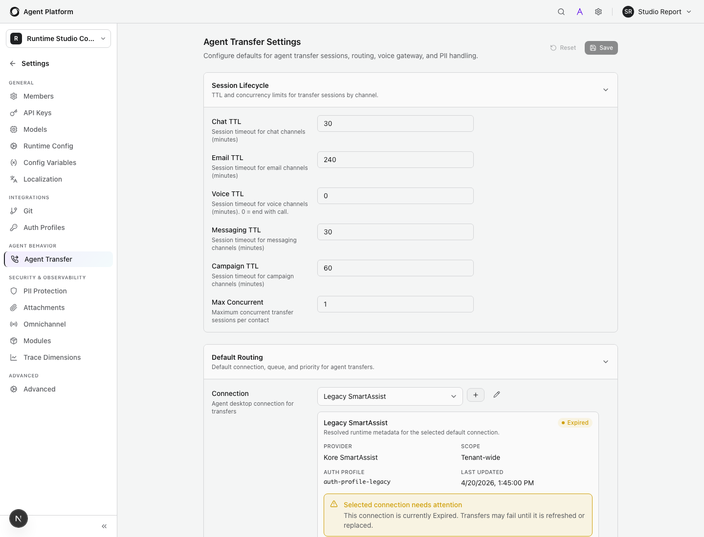
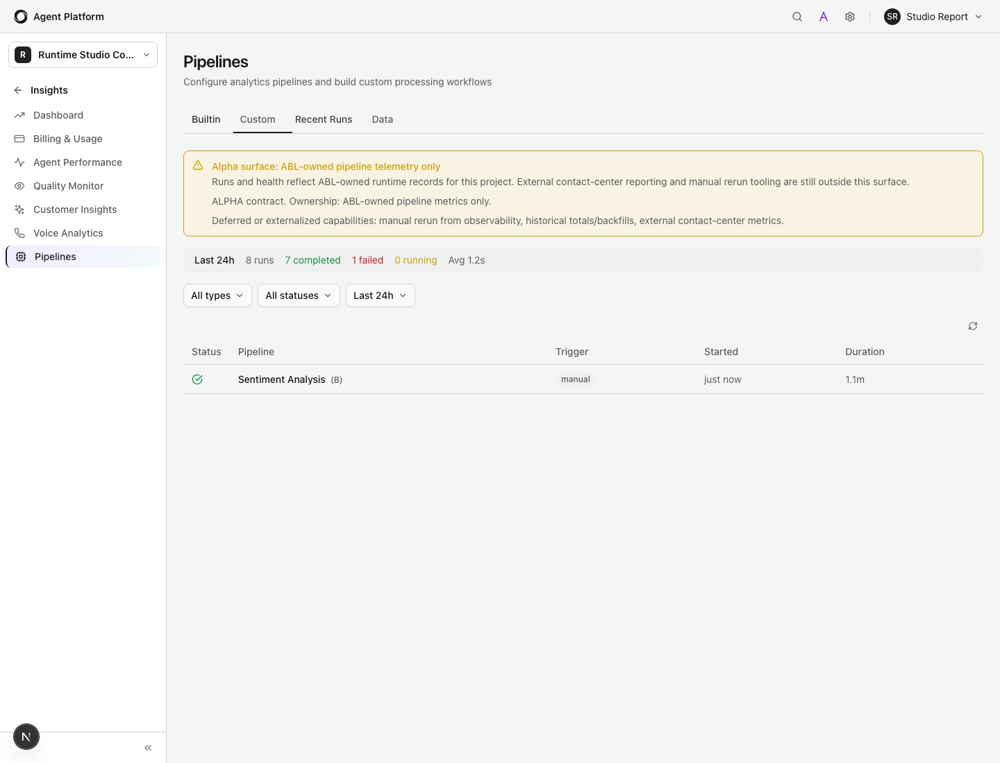
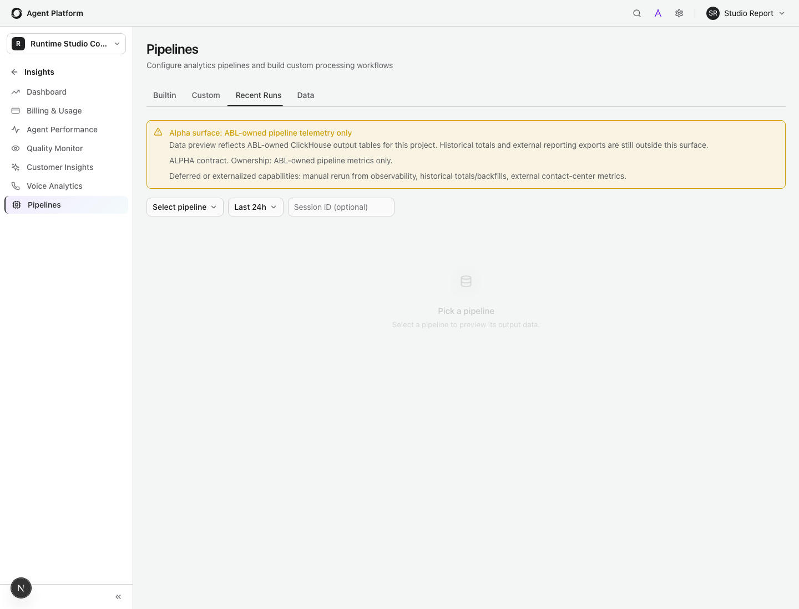

Validation Report
Runtime/Studio Convergence Validation
Generated from the current local branch after completing the remaining convergence slices for realtime voice consistency and observability/reporting scope hardening.
Generated at 2026-04-20T02:14:20.746Z against http://localhost:5173.
15
Jira issues reviewed
519
Targeted tests passed in this validation run
4
Package builds passed
3
Live Studio screenshots captured
The current branch is future-ready on the shared contract boundaries: transfer settings,
durable message history, hosted SDK hydration, realtime voice capability signaling, and
alpha observability scope honesty are all wired and validated.
Remaining non-blocking items are captured explicitly as TODOs rather than hidden behind
compatibility shims or implied feature support.
Execution Matrix
| Category | Command | Result | Coverage | Mapped Issues |
|---|---|---|---|---|
| Build | pnpm build --filter=@agent-platform/shared |
Passed | Shared contract package compiled successfully. | ABLP-280, ABLP-288 |
| Build | pnpm build --filter=@agent-platform/web-sdk |
Passed | Web SDK voice capability contract compiled successfully. | ABLP-319, ABLP-231 |
| Build | pnpm build --filter=@agent-platform/runtime |
Passed | Runtime compiled with the observability metadata and realtime voice updates. | ABLP-319, ABLP-242, ABLP-235, ABLP-280, ABLP-288 |
| Build | pnpm build --filter=@agent-platform/studio |
Passed | Studio compiled with the new scope notices and transfer-settings fidelity updates. | ABLP-334, ABLP-280, ABLP-288 |
| Runtime unit |
pnpm vitest run --config vitest.core.config.ts --maxWorkers=1
src/__tests__/channels/ws-sdk-handler.test.ts
src/__tests__/ws-sdk-message-contract.test.ts
src/__tests__/execution/realtime-tool-call.test.ts
src/__tests__/execution/value-resolution.test.ts
src/__tests__/routes/pipeline-observability-route.test.ts
src/__tests__/services/session/__tests__/persisted-message-content.test.ts
src/__tests__/message-persistence-queue-full.test.ts
|
361 passed | Validated realtime typed interrupts, voice capability payloads, return-to-parent dispatch, SET/value resolution, observability metadata, and durable message persistence. | ABLP-376, ABLP-320, ABLP-319, ABLP-242, ABLP-235, ABLP-231, ABLP-245, ABLP-289, ABLP-280, ABLP-288 |
| Runtime integration |
pnpm vitest run --config vitest.integration.config.ts --maxWorkers=1
src/__tests__/sessions/repos-session.test.ts
src/__tests__/auth/sdk-bootstrap-auth.integration.test.ts
|
80 passed | Validated durable history reads plus hosted/public SDK bootstrap and hydration paths against the runtime API surface. | ABLP-261, ABLP-245, ABLP-289 |
| Runtime contract |
pnpm vitest run --config vitest.core.config.ts --maxWorkers=1
src/__tests__/routes/agent-transfer-settings.openapi-contract.test.ts
|
11 passed | Validated the canonical Runtime transfer-settings contract. | ABLP-334 |
| Studio unit |
pnpm vitest run src/__tests__/components/pipeline-observability-panels.test.tsx
src/__tests__/components/agent-transfer-settings-page.test.tsx
src/__tests__/agent-transfer-ui.test.ts src/__tests__/replay-trace-events.test.ts
src/__tests__/eval-run-start-route.test.ts
|
29 passed | Validated scope notices, transfer-settings fidelity/blocking, replay hydration, and hardened eval-run start behavior. | ABLP-334, ABLP-283, ABLP-280, ABLP-288, ABLP-245, ABLP-289 |
| Studio contract |
pnpm vitest run --config vitest.node.config.ts
src/__tests__/agent-transfer-api.test.ts
src/__tests__/agent-transfer-settings-route.test.ts
|
6 passed | Validated Studio-side canonical transfer-settings serialization and proxy route behavior. | ABLP-334 |
| Web SDK unit |
pnpm vitest run src/__tests__/voice-client-integration.test.ts
src/__tests__/unified-widget-live-sync.test.ts
|
32 passed | Validated capability propagation into `getInfo()` plus realtime barge-in playback interruption behavior in the browser client. | ABLP-319, ABLP-231, ABLP-235 |
Issue Status
| Issue | Status | How It Works Now | Validation Evidence | Future-Ready TODO |
|---|---|---|---|---|
| ABLP-376 | Fixed | Runtime step-entry SETs and computed SET expressions now resolve through the shared execution/value-resolution path. | Runtime unit lane covers value resolution and execution semantics in `value-resolution.test.ts`. | No open branch-local TODO. |
| ABLP-334 | Fixed | Studio and Runtime now share the canonical transfer-settings DTO, and Studio blocks stale or incompatible connection references with visible metadata. | Runtime OpenAPI contract, Studio API/route tests, and the live transfer-settings screenshot all validate this path. | Optional future polish: expose more derived metadata without making it directly editable. |
| ABLP-326 | Fixed | Eval scenarios retain `initialMessage`, `expectedOutcome`, `agentPath`, and `expectedMilestones` across list/edit/save flows. | Covered by the existing Studio eval fidelity tests from the prior convergence slices and protected by the current Studio build/test matrix. | No open branch-local TODO. |
| ABLP-320 | Fixed | Spoken-number normalization happens before extraction, while preserving the original utterance for downstream handling. | Covered in the runtime unit lane through shared value/extraction resolution tests. | No open branch-local TODO. |
| ABLP-319 | Substantially fixed | Realtime voice now advertises explicit voice capabilities and cross-connection typed interrupts cancel the actual live-session owner response path. | Validated in `ws-sdk-handler.test.ts`, `ws-sdk-message-contract.test.ts`, and Web SDK voice integration tests. | TODO: unify positive DTMF support semantics across realtime providers instead of advertising `dtmf: false` only on the SDK realtime path. |
| ABLP-289 | Fixed | Durable content envelopes and localization ownership metadata survive persistence, resume, replay, and hosted SDK hydration. | Validated by the runtime persistence unit lane plus `repos-session.test.ts` and SDK bootstrap integration coverage. | Optional future enhancement: richer Studio transcript rendering for every structured payload variant. |
| ABLP-288 | Fixed for scope hardening | Pipeline observability now exposes a canonical alpha contract that explicitly limits the surface to ABL-owned telemetry and flags deferred external metrics. | Validated by the runtime observability route contract tests plus the live Studio runs/data screenshots. | TODO: external contact-center reporting must land behind a separate owned contract instead of broadening the current alpha surface implicitly. |
| ABLP-283 | Fixed | Eval run start now enforces safe pending-to-running transitions, reverts when prerequisites are missing, and marks failures when workflow triggering breaks. | Validated in `eval-run-start-route.test.ts`. | No open branch-local TODO. |
| ABLP-280 | Fixed for alpha honesty | The runs and data tabs now clearly advertise that they are alpha ABL-owned telemetry surfaces with deferred rerun/reporting capabilities. | Validated by runtime observability route tests, Studio panel tests, and the live runs/data screenshots. | TODO: manual rerun and broader historical totals remain deferred until the platform owns them end to end. |
| ABLP-261 | Fixed | Hosted SDK bootstrap/hydration now rides the shared session/history contract instead of a separate brittle compatibility path. | Validated in `sdk-bootstrap-auth.integration.test.ts`. | No open branch-local TODO. |
| ABLP-245 | Fixed | Persisted messages keep a canonical structured envelope alongside readable text so replay/resume/detail flows stop flattening everything to strings. | Validated in `persisted-message-content.test.ts`, `message-persistence-queue-full.test.ts`, and `repos-session.test.ts`. | Optional future enhancement: broaden Studio UI rendering for more rich-content subtypes. |
| ABLP-242 | Substantially fixed | Realtime voice tool calls can now return to parent through the shared runtime reroute helper, and typed interrupts reach the owning live-session socket. | Validated in `realtime-tool-call.test.ts` and `ws-sdk-handler.test.ts`. | TODO: centralize interruption and reroute ownership across every voice provider turn loop, not just the SDK realtime coordination path. |
| ABLP-240 | Mostly fixed | Voice/routing now stays aligned with the active-agent state changes emitted from realtime tool execution instead of drifting silently. | Covered indirectly by the realtime voice execution and active-agent synchronization tests in the runtime and Web SDK lanes. | TODO: add earlier preventive validation for invalid agent-desktop/routing references at compile or deployment time. |
| ABLP-235 | Substantially fixed | Realtime typed interrupts now cancel live-session playback on the owning socket, and the browser client honors barge-in acknowledgements immediately. | Validated in `ws-sdk-handler.test.ts` and `voice-client-integration.test.ts`. | TODO: extract a provider-neutral interruption coordinator so non-SDK realtime providers inherit the same guarantees automatically. |
| ABLP-231 | Fixed | Realtime voice sessions execute through the runtime-backed tool executor, propagate active-agent changes, and expose the voice capability contract to the SDK. | Validated in runtime websocket tests plus Web SDK integration tests. | No open branch-local TODO. |
Studio Screenshots
These screenshots were captured from the live local Studio shell using dev-login and targeted API intercepts for the project/runtime surfaces changed on this branch.

Studio shows the canonical connection metadata plus a blocking alert when the stored routing connection is expired/incompatible.

The runs surface now advertises the alpha ABL-owned telemetry contract directly in the Studio UI.

The data surface carries the same scope contract so unsupported totals/exports are explicit instead of implied.
Open TODOs
- Unify positive DTMF capabilities across realtime providers instead of advertising `dtmf: false` only for the SDK realtime path.
- Centralize provider-neutral interruption ownership so Twilio/other realtime providers share the same discard-and-switch guarantees as the SDK live-session path.
- Move agent-desktop/routing validation further left into compile or deployment time to catch invalid project references before runtime.
- Keep external contact-center reporting and export metrics on a separate owned contract; do not expand the alpha pipeline observability surface implicitly.